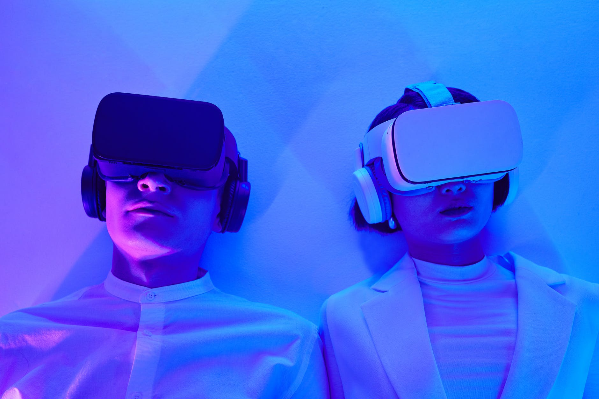

Todos nós sabemos que a Tecnologia está avançando a cada passar de ano. Com isso, já é de se esperar uma grande quantidade de projetos entrando no papel de desenvolvedores de todo o mundo, com o entuito de facilitar o nosso cotidiano, sendo com a criação de novos softwares, hardwares, dispositivos, ferramentas, materiais e máquinas. Hoje em dia é muito comum vermos o avanço da Inteligencia artificial, que é um ramo da ciência da computação que busca simular a inteligência humana em uma máquina. Os sistemas de IA são regidos por algoritmos usando técnicas como machine learning e deep learning para demonstrar comportamento “inteligente”.

Realidade Virtual
Exemplos muito comuns de Inteligencia Artificial hoje em dia, são as chamadas assistentes virtuais como a Siri (Apple), Cortana (Windows), Alexa (Amazon) e o Metaverso, um tipo de mundo virtual que tenta replicar a realidade através de dispositivos digitais. É um espaço coletivo e virtual compartilhado, constituído pela soma de "realidade virtual", "realidade aumentada" e "Internet".
Alta demanda no mercado por mais progrmadores
Já faz algum tempo que o setor de tecnologia da informação (TI) enfrenta déficit de profissionais. No Brasil, essa carência pode chegar a mais de 408 mil vagas de trabalho até o final de 2022. Com isso, as perdas acumuladas entre 2010 e 2020 já alcançam os R$ 167 bilhões.

Expectativa para o futuro
Enfim, estamos acostumados a ver a tecnologia extremamente avançada nos filmes de ficção científica, como, Supercomputadores, a robótica, os Dispositivos implantáveis, carros feitos impressos em 3D. Essas expectativas são reais para os próximos anos da humanidade, de acordo com cientistas.